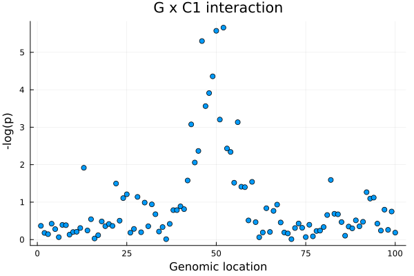
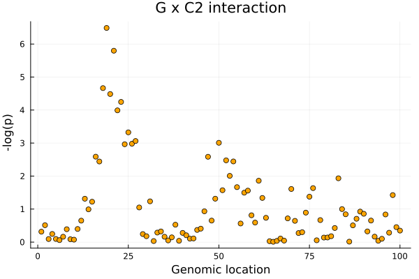
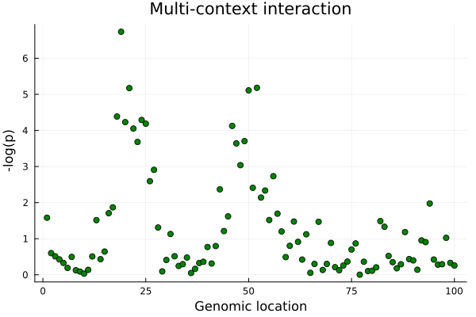

Mapping interaction eQTL effects (context-depedent)
Besides an eQTL's main effect, Dynema can map context-depedent eQTLs by testing interaction effect(s). In this example, we can map interaction effects with each of the cell states with a single-context interaction test or all cell states of interests jointly with a multi-contetext interaction test.
Single-context interaction
Let's consider the question: is the effect of an eQTL different between non-cytotoxic and cytotoxic T cells? We can answer this question by testing an interaction with C1 (T cell cytotoxicity). In this case, C1 is a single-cell level context variable with mean= 0 and variance = 1, where positive values reflect more cytotoxicity.
Let's define the formula:
f_GXC1 = @formula(0 ~ 1 + G + C1 + C2 + C3 + G & C1)FormulaTerm
Response:
0
Predictors:
1
G(unknown)
C1(unknown)
C2(unknown)
C3(unknown)
G(unknown) & C1(unknown)Notice that the interaction term G x C1 is denoted as G & CV1.
Next, we can simply run map_locus providing the interaction formula and specifying the term we want to test, in this case G & CV1.
res_gxc1 = map_locus(f_GXC1;
pheno = expr,
geno = ex_geno,
meta = meta,
groups = meta.donor_id,
termtest = ["G & C1"])
res_gxc1
Dynamic eQTL mapping (Dynema) model
E ~ 1 + G + C1 + C2 + C3 + G & C1
Term(s) = ["G & C1"]
N. variants = 100
N. cells = 4042
N. donors = 100
Test type = Score/lagrange multiplier
Results
┌───────────┬─────────┬─────────────┬─────────────┬──────────┬──────────┬───────
│ variant │ z │ p │ (Intercept) │ G │ C1 │ ⋯
├───────────┼─────────┼─────────────┼─────────────┼──────────┼──────────┼───────
│ rs_snp_52 │ 4.73466 │ 2.19419e-6 │ -0.35092 │ 0.536495 │ 0.249048 │ 0.33 ⋯
│ rs_snp_50 │ 4.69507 │ 2.6652e-6 │ -0.503237 │ 0.53774 │ 0.177449 │ 0.34 ⋯
│ rs_snp_46 │ 4.56456 │ 5.00549e-6 │ -0.415041 │ 0.369679 │ 0.177754 │ 0. ⋯
│ rs_snp_49 │ 4.08651 │ 4.37919e-5 │ -0.547543 │ 0.427766 │ 0.181582 │ 0.34 ⋯
│ rs_snp_48 │ 3.84107 │ 0.000122497 │ -0.339527 │ 0.457925 │ 0.229598 │ 0.34 ⋯
│ rs_snp_47 │ 3.63944 │ 0.000273233 │ -0.470173 │ 0.402132 │ 0.180213 │ 0.34 ⋯
│ rs_snp_51 │ 3.42071 │ 0.00062458 │ -0.444814 │ 0.493764 │ 0.223741 │ 0.34 ⋯
│ rs_snp_56 │ 3.37646 │ 0.000734259 │ -0.393297 │ 0.281975 │ 0.237177 │ 0.34 ⋯
│ rs_snp_43 │ 3.3393 │ 0.000839883 │ -0.266465 │ 0.17301 │ 0.229209 │ 0.35 ⋯
│ rs_snp_53 │ 2.90314 │ 0.00369438 │ -0.537504 │ 0.504409 │ 0.233238 │ 0.33 ⋯
│ ... │ ... │ ... │ ... │ ... │ ... │ ⋯
└───────────┴─────────┴─────────────┴─────────────┴──────────┴──────────┴───────
3 columns omitted
Computation time = 0.815 mins.
Let's extract the summary statistics and write into a text file (optional)
summ_gxc1 = get_summary(res_gxc1)
CSV.write("summ_gxc1.tsv", summ_gxc1, delim = "\t")"summ_gxc1.tsv"Assuming input variants are ordered by genomic location, let's make a quick locus plot:
using Plots
p_gxc1 = scatter(1:nrow(summ_gxc1), -log10.(summ_gxc1.p),
xlabel = "Genomic location", ylabel = " -log(p)",
title = "G x C1 interaction", legend = false)
Let's consider now mapping single-context interaction with Treg/activation status
f_GXC2 = @formula(0 ~ 1 + G + C1 + C2 + C3 + G & C2)
res_gxc2 = map_locus(f_GXC2;
pheno = expr,
geno = ex_geno,
meta = meta,
groups = meta.donor_id,
termtest = ["G & C2"])
res_gxc2
Dynamic eQTL mapping (Dynema) model
E ~ 1 + G + C1 + C2 + C3 + G & C2
Term(s) = ["G & C2"]
N. variants = 100
N. cells = 4042
N. donors = 100
Test type = Score/lagrange multiplier
Results
┌───────────┬──────────┬─────────────┬─────────────┬───────────┬──────────┬─────
│ variant │ z │ p │ (Intercept) │ G │ C1 │ ⋯
├───────────┼──────────┼─────────────┼─────────────┼───────────┼──────────┼─────
│ rs_snp_19 │ 5.10808 │ 3.25447e-7 │ -0.150015 │ 0.0305292 │ 0.326712 │ 0. ⋯
│ rs_snp_21 │ 4.7991 │ 1.59382e-6 │ -0.191077 │ 0.0709973 │ 0.325355 │ 0. ⋯
│ rs_snp_18 │ 4.24733 │ 2.16337e-5 │ -0.188116 │ 0.0839846 │ 0.324924 │ 0. ⋯
│ rs_snp_20 │ 4.15396 │ 3.26777e-5 │ -0.170013 │ 0.120484 │ 0.326067 │ 0. ⋯
│ rs_snp_23 │ 4.02626 │ 5.66705e-5 │ -0.183024 │ 0.07427 │ 0.321345 │ 0. ⋯
│ rs_snp_22 │ 3.88557 │ 0.00010209 │ -0.258626 │ 0.154787 │ 0.324694 │ 0. ⋯
│ rs_snp_25 │ 3.49556 │ 0.000473076 │ -0.141022 │ 0.0399118 │ 0.325765 │ 0. ⋯
│ rs_snp_27 │ 3.33056 │ 0.000866723 │ -0.180913 │ 0.0813678 │ 0.325995 │ 0. ⋯
│ rs_snp_50 │ -3.29591 │ 0.000981036 │ -0.573186 │ 0.627886 │ 0.312975 │ 0. ⋯
│ rs_snp_26 │ 3.27748 │ 0.00104738 │ -0.206195 │ 0.103987 │ 0.324028 │ 0. ⋯
│ ... │ ... │ ... │ ... │ ... │ ... │ ⋯
└───────────┴──────────┴─────────────┴─────────────┴───────────┴──────────┴─────
3 columns omitted
Computation time = 0.006226 mins.
Let's make a second locus plot for G x C1:
summ_gxc2 = get_summary(res_gxc2)
p_gxc2 = scatter(1:nrow(summ_gxc2), -log10.(summ_gxc2.p),
xlabel = "Genomic location", ylabel = " -log(p)",
title = "G x C2 interaction", legend = false, color = "orange")
Let's compare results
plot(p_gxc1, p_gxc2)Multi-context interaction
We can also test multiple contexts at once as follows:
f_int = @formula(0 ~ 1 + G + C1 + C2 + C3 + G & C1 + G & C2 + G & C3)
res_int = map_locus(f_int;
pheno = expr,
geno = ex_geno,
meta = meta,
groups = meta.donor_id,
termtest = ["G & C1", "G & C2", "G & C3"])
res_int
Dynamic eQTL mapping (Dynema) model
E ~ 1 + G + C1 + C2 + C3 + G & C1 + G & C2 + G & C3
Term(s) = ["G & C1", "G & C2", "G & C3"]
N. variants = 100
N. cells = 4042
N. donors = 100
Test type = Score/lagrange multiplier
Results
┌───────────┬─────────┬────────────┬─────────────┬───────────┬──────────┬───────
│ variant │ χ² │ p │ (Intercept) │ G │ C1 │ ⋯
├───────────┼─────────┼────────────┼─────────────┼───────────┼──────────┼───────
│ rs_snp_19 │ 34.1467 │ 1.84486e-7 │ -0.143086 │ 0.0205733 │ 0.299877 │ 0.21 ⋯
│ rs_snp_52 │ 26.7658 │ 6.59182e-6 │ -0.370937 │ 0.57178 │ 0.247794 │ 0.39 ⋯
│ rs_snp_21 │ 26.7258 │ 6.72036e-6 │ -0.182903 │ 0.0621559 │ 0.299921 │ 0.18 ⋯
│ rs_snp_50 │ 26.4285 │ 7.75674e-6 │ -0.534473 │ 0.572777 │ 0.181073 │ 0.43 ⋯
│ rs_snp_18 │ 22.9583 │ 4.11991e-5 │ -0.178533 │ 0.0712213 │ 0.292454 │ 0.2 ⋯
│ rs_snp_24 │ 22.502 │ 5.12808e-5 │ -0.225177 │ 0.158123 │ 0.27421 │ 0.2 ⋯
│ rs_snp_20 │ 22.2139 │ 5.88776e-5 │ -0.1643 │ 0.104385 │ 0.306193 │ 0.28 ⋯
│ rs_snp_25 │ 22.0027 │ 6.51462e-5 │ -0.130495 │ 0.0178267 │ 0.29251 │ 0.28 ⋯
│ rs_snp_46 │ 21.7115 │ 7.48963e-5 │ -0.439772 │ 0.395807 │ 0.179411 │ 0.41 ⋯
│ rs_snp_22 │ 21.3594 │ 8.86452e-5 │ -0.238182 │ 0.131946 │ 0.261712 │ 0.21 ⋯
│ ... │ ... │ ... │ ... │ ... │ ... │ ⋯
└───────────┴─────────┴────────────┴─────────────┴───────────┴──────────┴───────
5 columns omitted
Computation time = 0.02091 mins.
summ_int = get_summary(res_int)
p_int = scatter(1:nrow(summ_int), -log10.(summ_int.p),
xlabel = "Genomic location", ylabel = " -log(p)",
title = "Multi-context interaction", legend = false, color = "green")
The multi-context interaction captures both G x C1 and G x C2 signals.